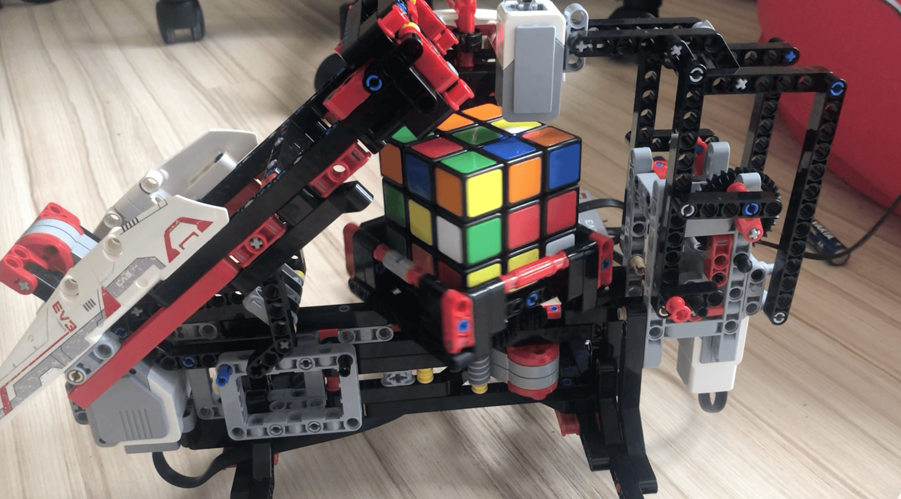
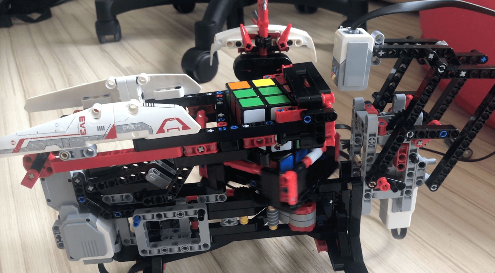
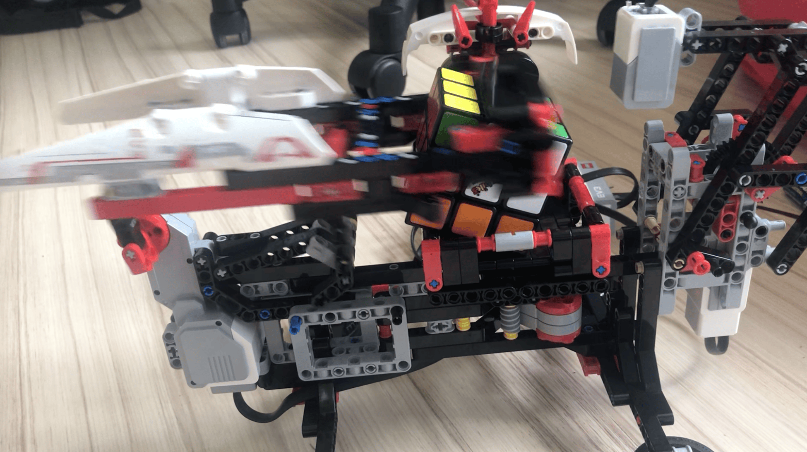

Mindstorm-Rubik
Ein Lego Mindstorm System, welches den Rubiks-Cube löst
A Lego Mindstorm system that solves the Rubik's Cube
Un sistema LEGO MINDSTORM que resuelve el cubo Rubiks
Un système Lego Mindstorm qui résout le Rubiks-Cube
- Mindstorm
- Lego
- Sensoren
- Scratch
- EV3 Classroom
Ziel
Das Projekt ist eine reinste Spielerei und soll ein Problem lösen, welches ich (ohne Weiteres) nicht lösen konnte :)
Der Rubiks Cube ist ein sehr bekanntes Rätsel, welches viele Leute nicht lösen können, doch mein Lego-Mindstorm-Roboter schon.
Ablauf
Für den Rubiks-Cube-Solver gibt es online eine Anleitung. Der Aufbau hat hierbei schon Probleme gemacht, da nicht alle benötigten Teile im Set dabei sind und daher improvisiert werden muss.
Den Programmcode gibt es ebenfalls online zu finden und muss nur noch über einige Umwege importiert und auf den LEGO-Computer hochgeladen werden.
Ergebnis
Der Rubiks-Cube-Solver schafft es in maximal 3 Minuten jede mögliche Stellung des Rubik-Cubes zu lösen.
Hierfür werden erst mit dem im Set enthaltenen Farbsensor alle Seiten und Felder gescannt, dann gerechnet und schlussendlich wird mit dem Roboterarm und der rotierenden Halterung der Rubik Cube gelöst.
Goal
The project is a pure gimmick and is intended to solve a problem that I could not solve (without further ado):)
The Rubiks Cube is a very familiar puzzle that many people can't solve, but my Lego Mindstorm robot can.
Process
Instructions for the Rubiks Cube Solver are available online. The structure has already caused problems here, as not all the necessary parts are included in the set and therefore have to be improvised.
The program code can also be found online and only needs to be imported via a few detours and uploaded to the LEGO computer.
Results
The Rubik's Cube Solver manages to release every possible position of the Rubik's Cube in a maximum of 3 minutes.
For this purpose, all sides and fields are first scanned with the color sensor included in the set, then calculated and finally released with the robot arm and the rotating holder of the Rubik Cube.
Objetivo
El proyecto es un puro truco y está destinado a resolver un problema que (sin más preámbulos) no pude resolver:)
El cubo de Rubik es un acertijo muy conocido que mucha gente no puede resolver, pero mi robot Lego Mindstorm sí.
Proceso
El solucionador de cubos Rubiks tiene instrucciones en línea. La construcción ya ha planteado problemas, ya que no todas las piezas necesarias están incluidas en el conjunto y, por lo tanto, deben improvisarse.
El código de programa también se puede encontrar en línea y solo hay que importarlo y cargarlo en el ordenador LEGO a través de algunos desvíos.
Resultado
El solucionador de cubos Rubiks se las arregla para resolver todas las posiciones posibles del cubo Rubik en un máximo de 3 minutos.
Para ello, primero se escanean todos los lados y campos con el sensor de color incluido en el set, luego se calculan y, finalmente, se sueltan con el brazo robótico y el soporte giratorio del Rubik Cube.
Objectif
Le projet est un pur gadget et vise à résoudre un problème que je n'ai pas pu résoudre (facilement) :)
Le Rubiks Cube est une énigme bien connue que beaucoup de gens ne peuvent pas résoudre, mais mon robot Lego Mindstorm l'est.
Déroulement
Il existe des instructions en ligne pour le solveur de cube Rubiks. La construction a déjà posé des problèmes, car toutes les pièces nécessaires ne sont pas incluses dans l'ensemble et doivent donc être improvisées.
Le code du programme peut également être trouvé en ligne et n'a plus qu'à être importé par quelques détours et téléchargé sur l'ordinateur Lego.
Résultat
Le solveur Rubiks-Cube parvient à résoudre toutes les positions possibles du Rubiks-Cube en 3 minutes maximum.
Pour ce faire, tous les côtés et tous les champs sont numérisés avec le capteur de couleur inclus dans le kit, puis calculés et finalement détachés avec le bras du robot et le support rotatif du Rubik Cube.
Bilder

Scannen der Farben
Drehen der unteren Seite
Rotiern des Cubes